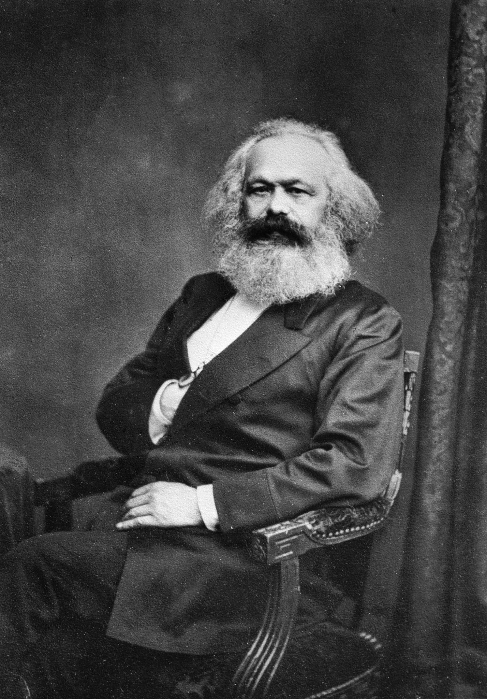
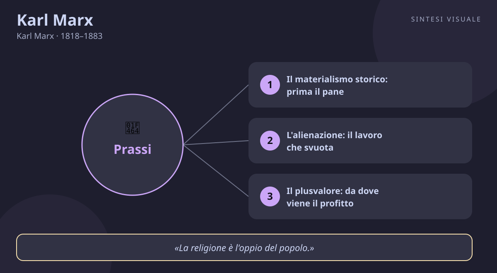

Karl Marx
Karl Marx · 1818–1883
«I filosofi hanno solo interpretato il mondo; ora si tratta di cambiarlo»
- Lotta di classe
- Plusvalore
- Alienazione
- Materialismo storico
💬La massima
«I filosofi hanno finora solo interpretato il mondo in diversi modi; si tratta ora di cambiarlo.»
— Karl Marx, Tesi su Feuerbach, tesi XI (scritte nel 1845, pubblicate postume nel 1888)
È una frase brevissima che fa da spartiacque nella storia del pensiero. Marx non dice che interpretare sia inutile: dice che non basta più. Fino a lui la filosofia, anche quella più rivoluzionaria come quella di Hegel, spiegava come va il mondo — la ragione, lo spirito, le idee. Marx rovescia il tavolo: il punto non è contemplare il mondo da fuori, ma metterci le mani dentro e trasformarlo, a partire dalle condizioni materiali in cui le persone vivono davvero.
Immaginala così: è come la differenza tra un critico d'arte che descrive alla perfezione un quadro storto appeso al muro e chi prende la scala e lo raddrizza. La filosofia precedente aveva descritto benissimo il quadro storto — lo sfruttamento, la miseria, l'alienazione. Marx dice: adesso prendiamo la scala. Per questo la tesi XI è anche incisa sulla sua tomba al cimitero di Highgate, a Londra: non è un aforisma, è il suo programma di vita.
Attenzione però a un equivoco: "cambiare il mondo" per Marx non significa agire alla cieca o predicare buone intenzioni. Significa conoscere le leggi con cui funziona la società — economia, classi, rapporti di produzione — e usare quella conoscenza per l'azione politica organizzata. Teoria e pratica devono camminare insieme: la famosa prassi. Senza teoria, l'azione è cieca; senza azione, la teoria è chiacchiera.
👤Biografia
Karl Marx nasce il 5 maggio 1818 a Treviri, nella Prussia renana, da una famiglia borghese di origine ebraica convertita al protestantesimo. Il padre, avvocato illuminista, gli trasmette l'amore per Voltaire e per la ragione; la madre, Henriette, ne sopporta con pazienza le tempeste. Studente brillante ma indisciplinato a Bonn e Berlino, Marx si innamora della filosofia hegeliana e poi se ne libera: la trova geniale ma troppo chiusa nelle nuvole delle idee.
La sua vita è un esilio continuo. Cacciato dalla Germania, poi dalla Francia e dal Belgio per i suoi articoli incendiari, dal 1849 si stabilisce a Londra con la moglie Jenny von Westphalen — aristocratica che rinuncia a tutto per lui — e i figli. A Londra conosce la miseria vera: vive per anni in due stanze a Soho, tra debiti, sfratti, lutti (perde tre figli in tenera età) e malattie. Lo salva l'amicizia con Friedrich Engels, figlio di un industriale, che lo mantiene per decenni e con cui scrive a quattro mani. Burbero, sarcastico, fumatore accanito di sigari, lavoratore instancabile al British Museum: Marx è un uomo che ha pagato di persona ogni riga che ha scritto.
📌Sintesi del pensiero
Per Marx la storia non è guidata dalle grandi idee, ma dal modo in cui gli uomini producono ciò che serve per vivere: chi possiede i mezzi di produzione comanda, chi possiede solo le proprie braccia obbedisce. Da questo squilibrio nascono le classi sociali e la lotta tra di esse, che è il vero motore della storia. Il capitalismo, basato sul profitto estratto dal lavoro altrui, genera ricchezza immensa ma anche alienazione e crisi, e sarà superato — prevede Marx — da una società senza classi.
🏛️I temi fondamentali
-
- Il materialismo storico: prima il pane, poi le idee. La base di tutto. Marx sostiene che non sono le idee a fare la storia, ma le condizioni materiali: come produciamo cibo, vestiti, case e chi possiede fabbriche, terre e macchine. La politica, il diritto, la religione e la cultura sono la "sovrastruttura" che si alza sopra questa "struttura" economica. Esempio: una legge sul lavoro non nasce perché un legislatore ha avuto una bella idea, ma perché i rapporti di forza tra padroni e operai sono cambiati.
- L'alienazione: il lavoro che svuota. Nei Manoscritti del 1844 Marx descrive l'operaio che non si riconosce più nel proprio lavoro: produce oggetti che non gli appartengono, con ritmi che non decide, per arricchire qualcun altro. È come un cuoco bravissimo costretto a cucinare sempre lo stesso panino in catena di montaggio, senza mai assaggiarlo né firmarlo. Il lavoro, che dovrebbe realizzare l'uomo, diventa una condanna che lo svuota.
- Il plusvalore: da dove viene il profitto. Nel Capitale Marx spiega da dove viene il profitto: l'operaio produce in una giornata più valore di quanto riceve come salario; la differenza — il plusvalore — resta al capitalista. Non è una truffa individuale, è il meccanismo normale del sistema. Da qui nascono accumulazione, concorrenza feroce, crisi periodiche di sovrapproduzione: il capitalismo produce ricchezza mai vista, ma anche instabilità e disuguaglianza strutturali.
- La lotta di classe: il motore della storia. «La storia di ogni società finora esistita è storia di lotte di classi», apre il Manifesto. Schiavi e padroni, servi e signori, operai e borghesi: ogni epoca ha il suo conflitto centrale. Non è odio personale, è posizione oggettiva: chi sta da parti opposte del processo produttivo ha interessi opposti. La politica, per Marx, è sempre anche lotta tra questi interessi.
- La prassi: pensare cambiando. Ed eccoci alla massima di oggi. La filosofia deve diventare prassi: conoscenza che si fa azione organizzata. Il proletariato — la classe che non ha nulla da perdere «all'infuori delle proprie catene» — è per Marx il soggetto che può rovesciare il capitalismo e costruire una società senza classi, in cui i mezzi di produzione appartengono a tutti. Che si condivida o no questa previsione, l'idea che il pensiero debba misurarsi con la trasformazione concreta resta la sua impronta più viva.
📚Le opere principali
- Manifesto del Partito Comunista (1848, con Friedrich Engels). Tesi centrale: la borghesia ha creato un mercato mondiale e un proletariato mondiale; i comunisti devono organizzare quest'ultimo per conquistare il potere politico. Conta perché è il testo politico più letto della storia moderna: poche pagine, scritte in poche settimane, che hanno incendiato due secoli di dibattiti, rivoluzioni e paure.
- Il Capitale, Libro I (1867). Tesi centrale: svela scientificamente il meccanismo del plusvalore e le leggi di movimento del capitalismo (accumulazione, concentrazione, esercito industriale di riserva). Conta perché è la sua opera maggiore: più di mille pagine di economia, storia e filosofia intrecciate, ancora oggi punto di riferimento — anche critico — per chiunque studi lavoro e disuguaglianze.
- Tesi su Feuerbach (1845, pubblicate 1888) e L'ideologia tedesca (1845-46, con Engels). Tesi centrale: superamento del materialismo contemplativo di Feuerbach e dell'idealismo hegeliano; prima formulazione del materialismo storico. Contano perché qui nasce la massima di oggi: undici tesi buttate giù in un quaderno che cambiano il mestiere stesso del filosofo.
- Il 18 brumaio di Luigi Bonaparte (1852). Tesi centrale: analisi concreta di come, nella Francia del 1848-51, la borghesia abbia preferito un colpo di Stato autoritario alla democrazia pur di salvare i propri interessi. Conta perché mostra Marx analista politico finissimo: la famosa apertura — la storia si ripete «la prima volta come tragedia, la seconda come farsa» — è una lezione di lettura del potere valida ancora oggi.
💬Massime celebri
«Proletari di tutti i paesi, unitevi!» — Chiusura del Manifesto del Partito Comunista (1848). Conta perché è il più famoso appello internazionalista mai scritto: dice che lo sfruttamento non ha frontiere, e quindi nemmeno la risposta deve averle.
«La religione è l'oppio del popolo.» — Per la critica della filosofia del diritto di Hegel. Introduzione (1844). La frase completa la descrive come «il sospiro della creatura oppressa, il cuore di un mondo senza cuore». Conta perché spiega la religione non come semplice errore, ma come sollievo illusorio a una sofferenza reale — e come ostacolo se sostituisce la cura delle cause.
«Non è la coscienza degli uomini a determinare il loro essere, ma è il loro essere sociale a determinare la loro coscienza.» — Per la critica dell'economia politica, Prefazione (1859). Conta perché è la formula più netta del materialismo storico: prima viene come viviamo e lavoriamo, poi come pensiamo.
⌛Contesto storico
Marx vive in un'Europa che cambia pelle a velocità mai vista. Nasce tre anni dopo il Congresso di Vienna (1815), che ha restaurato monarchie e imperi dopo Napoleone: censura, polizia politica, divieto di associazione. Ma sotto questa calma di superficie ribolle la rivoluzione industriale: in Inghilterra e poi in Germania fabbriche, ferrovie, miniere e quartieri operai crescono a vista d'occhio, mentre milioni di contadini diventano operai salariati.
Il 1848 è l'anno del terremoto: rivoluzioni a Parigi, Vienna, Berlino, Milano e Venezia, e nello stesso anno esce il Manifesto. La borghesia liberale chiede costituzioni e parlamenti, gli operai chiedono pane, lavoro e voto; dopo pochi mesi i due fronti si spaccano — a Parigi la repressione della rivolta operaia di giugno segna la frattura. Marx è espulso e ripara a Londra, allora capitale del mondo: il paese più industrializzato, con la borsa, le colonie e il British Museum dove studierà per decenni.
La società in cui si muove è quella vittoriana: da un lato ricchezza sfacciata, dall'altro bambini in miniera, giornate di dodici ore, colera nei quartieri poveri. I movimenti che lo formano sono tre, e lui stesso li indica: la filosofia classica tedesca (Hegel e Feuerbach), l'economia politica inglese (Smith e Ricardo) e il socialismo francese (Saint-Simon, Fourier, Proudhon). Da Blanqui e dalle società operaie impara la politica rivoluzionaria; da Darwin — che ammira — l'idea di leggi evolutive della storia. A sua volta Marx trasmette tutto al movimento operaio: dalla Prima Internazionale (1864) alla socialdemocrazia tedesca, fino alle rivoluzioni del Novecento che si richiameranno a lui, spesso stravolgendolo.
🌊L'eredità
Dopo la morte di Marx nel 1883, Engels pubblica i Libri II e III del Capitale dai suoi manoscritti, e il marxismo diventa la corrente più influente — e più contesa — del pensiero sociale. In Germania Kautsky e Bernstein fondano la socialdemocrazia; in Russia Lenin fonde Marx con l'organizzazione rivoluzionaria e guida la Rivoluzione d'Ottobre (1917), da cui nasceranno l'Unione Sovietica e, per reazione o imitazione, i partiti comunisti di tutto il mondo. Rosa Luxemburg, Gramsci e Lukács rileggono Marx in chiave umanista e antidogmatica; la Scuola di Francoforte (Adorno, Horkheimer, Marcuse) lo incrocia con Freud e con la critica della cultura di massa. Sartre tenta di sposarlo con l'esistenzialismo, Althusser con lo strutturalismo. Persino i critici più severi — da Weber a Popper, da Arendt ad Hayek — devono misurarsi con lui: oggi storici dell'economia, sociologi delle disuguaglianze e movimenti per la giustizia climatica e del lavoro usano ancora i suoi attrezzi, anche quando ne rifiutano le conclusioni.
🌍Esempi di oggi
- Il rider e l'algoritmo. Un fattorino in bici lavora dodici ore guidato da un'app che decide tempi, percorsi e paghe, senza mai incontrare un "padrone" in carne e ossa. È alienazione e plusvalore in versione digitale: produce ricchezza che non controlla, con regole che non ha scritto — e la massima di Marx chiede: descriverlo basta, o serve cambiare le regole del gioco?
- La riunione che non decide nulla. In ufficio si discute per ore di "visione" e "valori aziendali", mentre i contratti restano precari e gli straordinari non pagati. Marx direbbe: guardate la struttura prima della sovrastruttura — le belle parole contano meno di chi decide orari, salari e licenziamenti.
- Il boicottaggio consapevole. Un gruppo di consumatori scopre che una marca di vestiti paga salari da fame e organizza una campagna che costringe l'azienda a cambiare fornitori. Teoria (l'inchiesta sui salari) più azione collettiva (il boicottaggio): è la prassi della tesi XI in formato tascabile, senza rivoluzioni ma con un risultato concreto.
🧠Quiz
Metti alla prova quello che hai imparato! Rispondi in chat con es. 1B 2A 3C 4D 5A.
1 Cosa afferma la tesi XI su Feuerbach?
2 Cosa intende Marx con "sovrastruttura"?
3 Da dove viene il profitto capitalistico secondo la teoria del plusvalore?
4 Quale evento storico coincide con la pubblicazione del Manifesto?
5 Chi fu l'amico e collaboratore che sostenne Marx per decenni, anche economicamente?
✅Soluzioni — tocca per vedere
1B – 2C – 3B – 4C – 5B
🔁Ripasso
- Tesi XI / prassi: se hai sbagliato la 1, ricorda la scala e il quadro storto: conoscere non basta, serve trasformare le condizioni materiali con azione organizzata.
- Struttura e sovrastruttura: se hai sbagliato la 2, ricorda che la base economica (chi possiede cosa) regge tutto; leggi, idee e chiese stanno al piano di sopra, non al pianterreno.
- Plusvalore: se hai sbagliato la 3, pensa al cuoco della catena di montaggio: in un giorno produce più valore di quanto gli viene pagato, e la differenza resta all'impresa.
🖼️In un colpo d’occhio

Tocca l’immagine per ingrandirla.